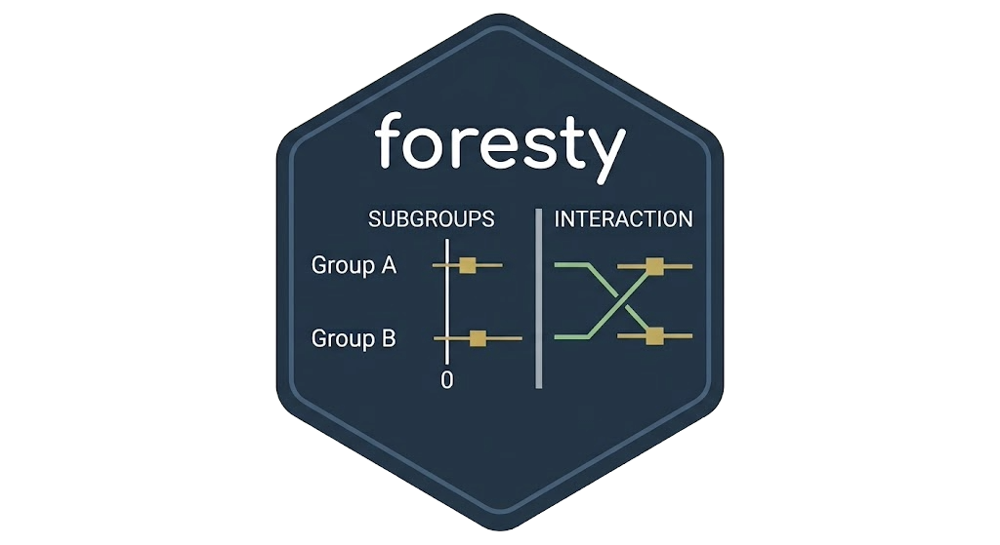
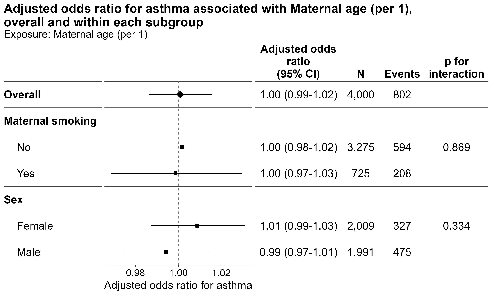
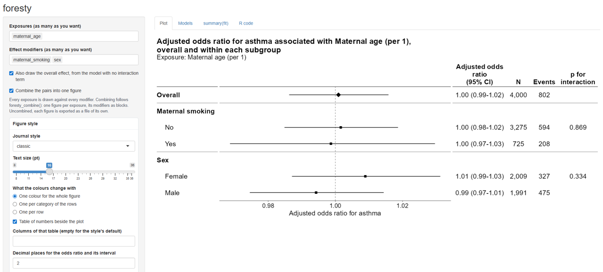
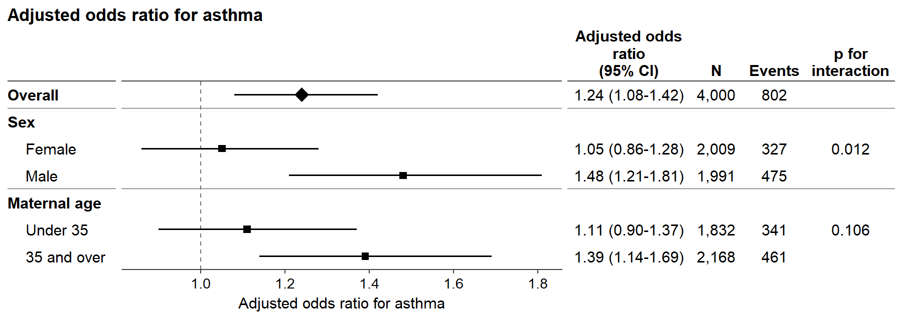

Visualize interaction effects with publication-ready forest plots.
An interaction p-value tells you whether the effect differs between subgroups, but not which subgroup shows the effect, in which direction, or by how much. foresty puts the interaction test and the subgroup estimates side by side, making interaction effects easier to interpret and report.
It also makes publication-ready forest plots easy to produce, with a Shiny app for exploring the results interactively and an HTML report that documents the model behind them.

Try it first

Installation:
# install.packages("devtools")
remotes::install_github("AkiShiroshita/foresty")Start with a model without an interaction term and let foresty explore possible exposure–modifier interactions:
library(foresty)
fit <- glm(
asthma ~ no2 + sex + maternal_smoking + maternal_age,
family = binomial,
data = foresty_cohort
)
foresty_app(fit)The app lets you select exposures and effect modifiers, choose how big a difference in the exposure each estimate is for — an interquartile range, two quantiles of it, an increment of your own — adjust the figure style, and produce forest plots and reports without having to remember the plotting code.
It opens in your browser, and its R code tab writes the code twice over: the foresty call that drew the figures, and — under How to calculate effect estimates for each subgroup — where those numbers come from, in base R and the car package with nothing from this package in them. So interactive exploration becomes a reproducible script either way.
Publication-ready styles
foresty provides several predefined styles:
| Style | Description |
|---|---|
"classic" |
Simple forest plot with a null line |
"jama" |
JAMA-inspired layout |
"nejm" |
NEJM-inspired layout |
"lancet" |
Lancet-inspired layout |
"bmj" |
BMJ-inspired layout |
"revman" |
Cochrane RevMan-inspired layout |
Styles are approximations of journal layouts rather than official journal templates.
The output can be customized further with ordinary ggplot2 layers, and it can be passed to summary(), predict(), broom::tidy(), and broom::glance(), etc.
Supported models
foresty works with fitted models that provide coefficients, a covariance matrix, and a model frame. Tested model classes include:
| Package | Models |
|---|---|
| base R |
glm(), lm()
|
survival |
coxph(), survreg()
|
lme4 |
lmer(), glmer()
|
| other |
MASS::polr() (logistic), nnet::multinom(), geepack::geeglm()
|
The effect measure is inferred from the model where possible, including odds ratios, hazard ratios, risk ratios, incidence rate ratios, and mean differences.
Robust and cluster-robust standard errors are also supported where applicable.
rms fits – lrm(), ols(), cph(), psm(), Glm(), orm() – are not supported. A variable transformed by rms is a different thing and is still read: rms::rcs(x, 4) inside a glm() formula is a spline basis like any other, as are splines::ns(), splines::bs() and stats::poly().
What foresty does not do
foresty is intentionally focused on two-way exposure × modifier interactions.
-
No three-way interactions. One call handles one exposure and one modifier. Multiple modifiers can be shown as separate blocks with
foresty_combine(), but they are not crossed with each other. - No automatic categorization of continuous modifiers. If a continuous modifier should be categorized, choose the cut points yourself and refit the model.
-
No separate subgroup refitting.
forestyestimates subgroup effects from one model containing the interaction rather than fitting separate models within each subgroup.
Use it in R
foresty has four main functions (see vignette("forest") for details):
-
foresty_main()— draws the effect of one or more exposures from models you have already fitted. -
foresty_interaction()— the core of the package: it adds the exposure × modifier interaction to a fitted model, estimates the exposure effect within each level of the modifier, and tests the interaction. -
foresty_combine()— puts an overall estimate and several subgroup analyses into one publication-ready figure. -
foresty_data()— draws the same figure from estimates you already have: a data frame, tibble or data.table with one row per row of the figure, for numbers that did not come out of a modelforestycan read.
More flexible way
Do you want to adjust for multiplicity (e.g., using the false discovery rate)? Do you want to perform multiple imputation and present pooled, subgroup-specific estimates? Of course, you can! Prepare the data you want to present and use foresty_data().
subgroups <- data.frame(
subgroup = c("Overall", "Female", "Male", "Under 35", "35 and over"),
block = c("Overall", "Sex", "Sex", "Maternal age", "Maternal age"),
overall = c(TRUE, FALSE, FALSE, FALSE, FALSE),
estimate = c(1.24, 1.05, 1.48, 1.11, 1.39),
conf.low = c(1.08, 0.86, 1.21, 0.90, 1.14),
conf.high = c(1.42, 1.28, 1.81, 1.37, 1.69),
n = c(4000, 2009, 1991, 1832, 2168),
events = c(802, 327, 475, 341, 461),
p_int = c(NA, 0.012, NA, 0.106, NA)
)
library(foresty)
foresty_data(
subgroups,
label = "subgroup", group = "block", emphasis = "overall",
interaction_p = "p_int",
measure = "OR", outcome = "asthma", adjusted = TRUE
)